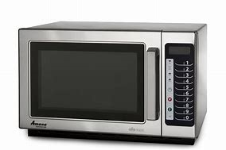

R$ 200
O Micro-ondas 20L Midea veio para ser seu novo aliado na cozinha. Seu painel conta com o Minuto Fácil que proporciona acesso rápido com teclas de 1,2 ou 3 minutos para facilitar ainda mais o seu dia a dia. Possui diversas opções de Receitas Pré Programadas, Menu Descongelar e Menu Preferido, que deixa salvo o programa e o tempo de suas receitas prediletas. Com baixo consumo de energia, o micro-ondas 20L Midea tem a função Eco, que proporciona economia com o visor desligado. Além da função Tira Odor, que ameniza os odores do seu aparelho, Função Aquecer e Tecla Ligar/+30 segundos. Aproveite da comodidade e da praticidade da linha de micro-ondas Midea.